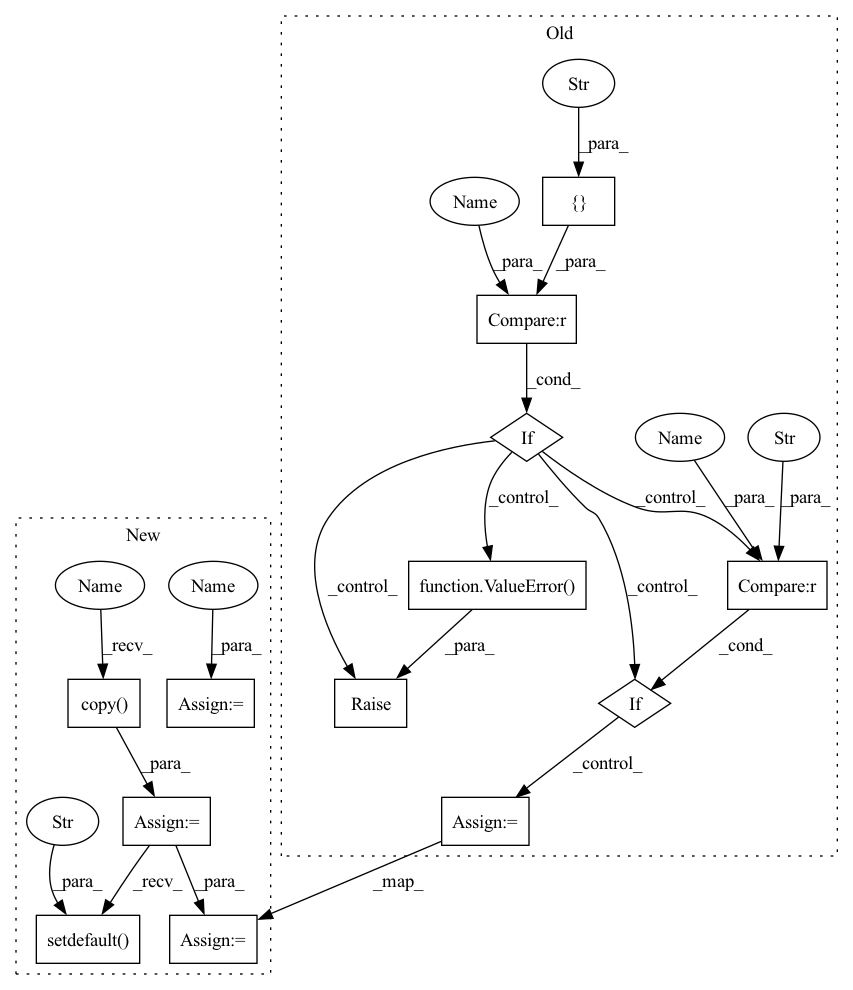

Pattern ID :2086

Before Change
// build activation layer
if self.with_activation:
// TODO: introduce `act_cfg` and supports more activation layers
if self.activation not in ["relu"]:
raise ValueError("{} is currently not supported.".format(
self.activation))
if self.activation == "relu":
self.activate = nn.ReLU(inplace=inplace)
// Use msra init by default
self.init_weights()
After Change
assert act_cfg is None or isinstance(act_cfg, dict)
self.conv_cfg = conv_cfg
self.norm_cfg = norm_cfg
self.act_cfg = act_cfg
self.inplace = inplace
self.order = order
assert isinstance(self.order, tuple) and len(self.order) == 3
assert set(order) == set(["conv", "norm", "act"])
self.with_norm = norm_cfg is not None
self.with_activation = act_cfg is not None
// if the conv layer is before a norm layer, bias is unnecessary.
if bias == "auto":
bias = False if self.with_norm else True
self.with_bias = bias
if self.with_norm and self.with_bias:
warnings.warn("ConvModule has norm and bias at the same time")
// build convolution layer
self.conv = build_conv_layer(
conv_cfg,
in_channels,
out_channels,
kernel_size,
stride=stride,
padding=padding,
dilation=dilation,
groups=groups,
bias=bias)
// export the attributes of self.conv to a higher level for convenience
self.in_channels = self.conv.in_channels
self.out_channels = self.conv.out_channels
self.kernel_size = self.conv.kernel_size
self.stride = self.conv.stride
self.padding = self.conv.padding
self.dilation = self.conv.dilation
self.transposed = self.conv.transposed
self.output_padding = self.conv.output_padding
self.groups = self.conv.groups
// build normalization layers
if self.with_norm:
// norm layer is after conv layer
if order.index("norm") > order.index("conv"):
norm_channels = out_channels
else:
norm_channels = in_channels
self.norm_name, norm = build_norm_layer(norm_cfg, norm_channels)
self.add_module(self.norm_name, norm)
// build activation layer
if self.with_activation:
act_cfg_ = act_cfg.copy()
act_cfg_.setdefault("inplace", inplace)
self.activate = build_activation_layer(act_cfg_)
// Use msra init by default
self.init_weights()
In pattern: SUPERPATTERN
Frequency: 3
Non-data size: 13
Instances
Fragment ID: 4882258
Project Name: shinya7y/universenet
Commit Name: 050614a9b8528de4f8e453aa42d9265206738eb1
Time: 2020-03-11
Author: xvjiarui0826@gmail.com
File Name: mmdet/models/utils/conv_module.py
M Class Name: ConvModule
N Class Name: ConvModule
M Method Name: __init__(14)
N Method Name: __init__(14)
M Parent Class: nn.Module
N Parent Class: nn.Module
M File Name: mmdet/models/utils/conv_module.py
N File Name: mmdet/models/utils/conv_module.py
M Start Line: 89
M End Line: 147
N Start Line: 88
N End Line: 143
Fragment ID: 4882260
Project Name: open-mmlab/mmaction2
Commit Name: a1efe4863eae67e6768e73fe70e7435995c3ef3e
Time: 2020-03-16
Author: linjintao@sensetime.com
File Name: mmaction/models/common/conv_module.py
M Class Name: ConvModule
N Class Name: ConvModule
M Method Name: __init__(14)
N Method Name: __init__(14)
M Parent Class: nn.Module
N Parent Class: nn.Module
M File Name: mmaction/models/common/conv_module.py
N File Name: mmaction/models/common/conv_module.py
M Start Line: 85
M End Line: 143
N Start Line: 51
N End Line: 106
Fragment ID: 4882261
Project Name: saic-vul/iterdet
Commit Name: 050614a9b8528de4f8e453aa42d9265206738eb1
Time: 2020-03-11
Author: xvjiarui0826@gmail.com
File Name: mmdet/models/utils/conv_module.py
M Class Name: ConvModule
N Class Name: ConvModule
M Method Name: __init__(14)
N Method Name: __init__(14)
M Parent Class: nn.Module
N Parent Class: nn.Module
M File Name: mmdet/models/utils/conv_module.py
N File Name: mmdet/models/utils/conv_module.py
M Start Line: 89
M End Line: 147
N Start Line: 88
N End Line: 143